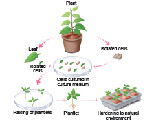
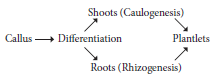
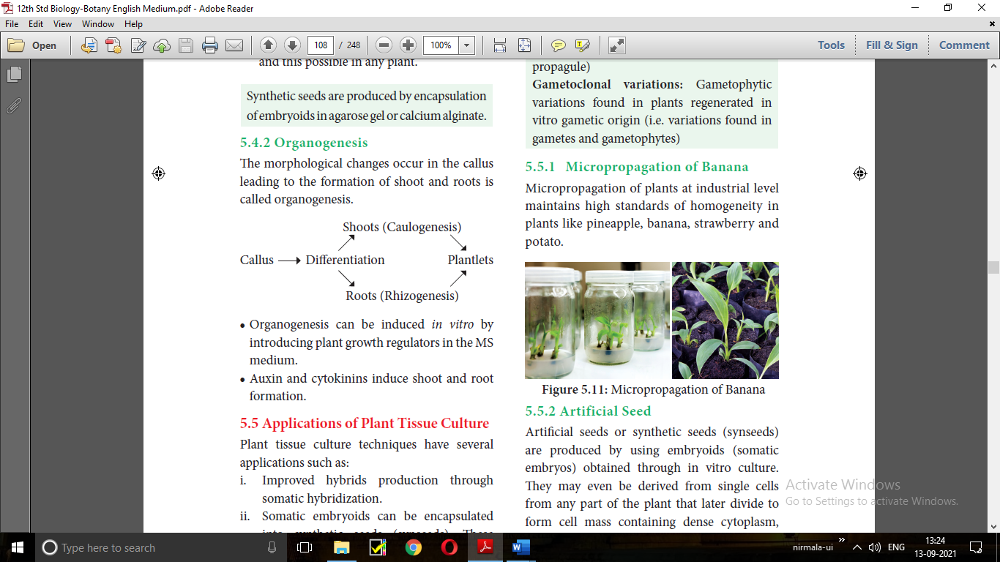
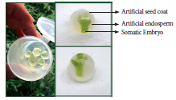
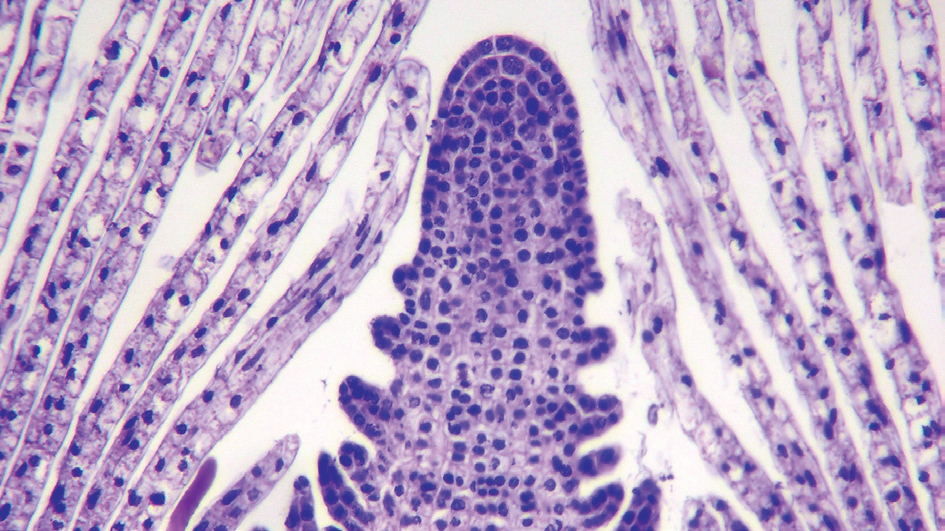
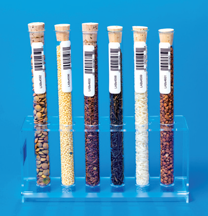
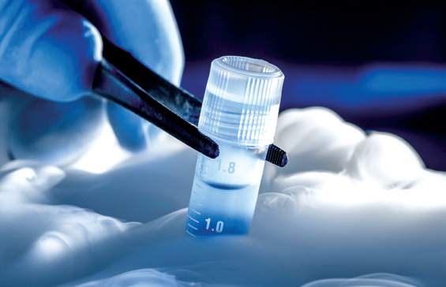
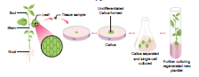

2. Meristem culture
3. Protoplast culture
4. Cell suspension culture.
The culture of embryos, anthers, ovaries, roots, shoots or other organs of plants on culture media.

Figure 5.6: Organ Culture
The culture of any plant meristematic tissue on culture media.
figure 5.7 Meristem Culture
older leaves are removed from a cutting of carnation
magnified view of shoot tip after removal of larger leaves
shoot tip with growing tip after removal of enclosing leaves.
paper wick callus plantlets
Protoplasts are cells without a cell wall, but bound by a cell membrane or plasma membrane.
Using protoplasts, it is possible to regenerate whole plants from single cells and also develop
somatic hybrids. The steps involved in protoplast culture.
Figure 5.8 Protoplast culture
young palnt
Leaf sterilization
Epidermis peeling
Peeled leaf segments
plasmolylsed cells
plasmolysed cells
cells in enzyme mixture
cell wall digestion and release of protoplast
washing of protoplast
isolated protoplast
plating of protoplasts
cell wall regeneration
clump of cells
callus tissue
Differentiation of callus tissue
Plantlet derived from protoplast
Small bits of plant tissue like leaf tissue are used for isolation of protoplast. The leaf tissue is immersed in 0.5 percentage Macrozyme and 2 percentage Onozuka cellulase enzymes dissolved in 13 percentage sorbitol or mannitol at pH 5.4. It is then incubated over-night at 25 degree Celcius . After a gentle teasing of cells, protoplasts are obtained, and these are then transferred to 20 percentage sucrose solution to retain their viability. They are then centrifuged to get pure protoplasts as different from debris of cell walls.
It is done through the use of a suitable fusogen. This is normally PEG OPEN BRACKET Polyethylene Glycol CLOSE BRACKET. The isolated protoplast are incubated in 25 to 30 percentage concentration of PEG with Ca plus plus ions and the protoplast shows agglutination OPEN BRACKET the formation of clumps of cells CLOSE BRACKET and fusion.
MS liquid medium is used with some modification in droplet, plating or micro-drop array techniques. Protoplast viability is tested with fluorescein diacetate before the culture. The cultures
are incubated in continuous light 1000-2000 lux at 25 degree Celcius . The cell wall formation occurs within 24-
48 hours and the first division of new cells occurs between 2-7 days of culture.
The fusion product of protoplasts without nucleus of different cells is called a cybrid. Following this nuclear fusion take place. This process is called somatic hybridization.
4. Cell Suspension Culture
The growing of cells including the culture of single cells or small aggregates of cells in vitro in liquid medium is known as cell suspension culture. The cell suspension is prepared by transferring a portion of callus to the liquid medium and agitated using rotary shaker instrument. The cells are separated from the callus tissue and used for cell suspension culture.
Cell suspension culture can be useful for the production of secondary metabolites like alkaloids, flavonoids, terpenoids, phenolic compounds and recombinant proteins. Secondary metabolites are chemical compounds that are not required by the plant for normal growth and development but
are produced in the plant as ‘byproducts’ of cell metabolism. For Example: Biosynthesis and isolation of indole alkaloids from Catharanthus roseus plant cell culture.
The process of production of secondary metabolites can be scaled up and automated using bio-reactors for commercial production. Many strategies such as biotransformation, elicitation and immobilization have been used to make cell suspension cultures more efficient in the production
of secondary metabolites. Few examples of industrially important plant secondary metabolites
are listed below in the table:
Secondary metabolites |
Plant source |
Uses |
Digoxin |
Digitalis purpurea |
Cardiac tonic |
Codeine |
Papaver somniferum |
Analgesic |
Capsaicin |
Capsicum annuum |
Rheumatic pain treatment |
Vincristine |
Catharanthus roseus |
Anticarcinogenic |
Quinine |
Cinchona officinalis |
Antimalarial |
Table 5.1: Secondary metabolites and its plant resources
From the explants, plants can be regenerated by somatic embryogenesis or organogenesis.
Figure Flow chart of plant regeneration pathway
Explant
in ways
Direct embryogenesis
Embryoids
plantlets
Hardening
Transfer to field
Meristem in ways multiple shoot induction open bracket Micropropagation close bracket
Root induction
plantlets
Hardening
Transfer to field
shoot apex
Stem
Leaf
Root
Callus in ways
Indirect embryogenesis
shoot induction
Root induction
plantlets
Hardening
Transfer to field
Direct embryogenesis
in ways
Embryoids
plantelts
Hardening
Transfer to field
Direct organogenesis
Expalnts
Direct somatic embryogenesis
callus
Somtic embryo
Rooting
Root organogenesis
shoot organogenesis
Rooting
plantlets
indirect embryogenesis
Figure 5.10 Plant regeneration pathway
Somatic embryogenesis is the formation of embryos from the callus tissue directly and these embryos are called Embryoids or from the in vitro cells directly form pre-embryonic cells which differentiate into embryoids.
Applications
Somatic embryogenesis provides potential plantlets which after hardening period can establish into plants.
Somatic embryoids can be be used for the production of synthetic seeds.
Somatic embryogenesis is now reported in many plants such as Allium sativum, Hordeum vulgare, Oryza sativa, Zea mays and this possible in any plant.
Synthetic seeds are produced by encapsulation of embryoids in agarose gel or calcium alginate.
The morphological changes occur in the callus leading to the formation of shoot and roots is called organogenesis.

Organogenesis can be induced in vitro byintroducing plant growth regulators in the MSmedium.
Auxin and cytokinins induce shoot and root formation.
Plant tissue culture techniques have several applications such as:
1. Improved hybrids production through somatic hybridization.
2. Somatic embryoids can be encapsulated into synthetic seeds OPEN BRACKET synseeds CLOSE BRACKET. These encapsulated seeds or synthetic seeds help in conservation of plant biodiversity.
3. Production of disease resistant plants through meristem and shoot tip culture.
4. Production of stress resistant plants like herbicide tolerant, heat tolerant plants.
5. Micropropagation technique to obtain large numbers of plantlets of both crop and tree species useful in forestry within a short span of time and all through the year.
6. Production of secondary metabolites from cell culture utilized in pharmaceutical, cosmetic and food industries.
Somatic variations found in plants regenerated in vitro OPEN BRACKET That is, variations found in leaf, stem, root, tuber or propagule CLOSE BRACKET
Gametophytic variations found in plants regenerated in vitro gametic origin OPEN BRACKET i.e. variations found in gametes and gametophytes CLOSE BRACKET

Figure 5.11: Micropropagation of Banana
Artificial seeds or synthetic seeds OPEN BRACKET synseeds CLOSE BRACKET are produced by using embryoids OPEN BRACKET somatic embryos CLOSE BRACKET obtained through in vitro culture. They may even be derived from single cells from any part of the plant that later divide to form cell mass containing dense cytoplasm, large nuclceus, starch grains, proteins, and oils etc., To prepare the artificial seeds different inert materials are used for coating the somatic embryoids like agrose and sodium alginate.

Figure 5.12: Artificial seeds
Advantages of Artificial seeds
Artificial seeds have many advantages over the true seeds
Millions of artificial seeds can be produced at any time at low cost.
They provide an easy method to produce genetically engineered plants with desirable traits.
It is easy to test the genotype of plants.
They can potentially stored for long time under cryopreservation method.
Artificial seeds produce identical plants
The period of dormancy of artificial seeds is greatly reduced, hence growth is faster with a shortened life cycle.

Figure 5.13: Shoot tip - Apical Meristem
The field grown plants like perennial crops, usually are infected by variety of pathogens like fungi, bacteria, mycoplasma, viruses which cause considerable economic losses. Chemical methods can
be used to control fungal and bacterial pathogens, but not viruses generally.
Shoot meristem tip culture is the method to produce virus-free plants, because the shoot meristem tip is always free from viruses.
Germplasm conservation refers to the conservation of living genetic resources like pollen, seeds or tissue of plant material maintained for the purpose of selective plant breeding, preservation in live condition and used for many research works.
Germplasm conservation resources is a part of collection of seeds and pollen that are stored in seed or pollen banks, so as to maintain their viability and fertility for any later use such as hybridization and crop improvement. Germplasm conservation may also involve a gene bank, DNA bank of elite breeding lines of plant resources for the maintenance of biological diversity and also for food security.

Figure 5.14: Seed bank
Cryopreservation, also known as Cryoconservation, is a process by which protoplasts , cells, tissues, organelles, organs, extracellular matrix, enzymes or any other biological materials are subjected to preservation by cooling to very low temperature of –196 degree Celcius using liquid nitrogen. At this extreme low temperature any enzymatic or chemical activity of the biological material will be totally stopped and this leads to preservation of material in dormant status. Later these materials can be activated by bringing to room temperature slowly for any experimental work. Protective agents like dimethyl sulphoxide, glycerol or sucrose are added before cryopreservation process. These protective agents are called cryoprotectants, since they protect the cells, or tissues from the stress of freezing temperature.

Figure 5.15: Cryopreservation
Figure 5.16: IPR in India
Intellectual property right OPEN BRACKET IPR CLOSE BRACKET is a category of rights that includes intangible creation of the human intellect, and primarily consists of copyrights, patents, and trademarks. It also includes other types of rights, such as trade secrets, publicity rights, moral rights, and rights against unfair competition.
In biotechnology, the transformed microorganisms and plants and technologies for the production of commercial products are exclusively the property of the discoverer.
The discoverer has the full rights on his property. It should not be neglected by the others without legal permission.
The right of discoverer must be protected and it does by certain laws framed by a country.
The IPR is protected by different ways like patents, copyrights, trade secrets and trademarks, designs and geographical indications.
It is a special right to the discovererSLASHinventor that has been granted by the government through legislation for trading new articles.
A patent is a personal property which can be licensed or sold by the person or organisation just like any other property.
Patent terms give the inventor the rights to exclude others from making, using or selling his invention.
Advances in biotechnology and their applications deals with genetic manipulation.
Biosafety is the prevention of large-scale loss of biological integrity, focusing both on ecology and human health. These prevention mechanisms include conduction of regular reviews of the
biosafety in laboratory settings, as well as strict guidelines to follow. Many laboratories handling biohazards employ an ongoing risk management assessment and enforcement process for biosafety. Failures to follow such protocols can lead to increased risk of exposure to biohazards or pathogens.
Bioethics refers to the study of ethical issues emerging from advances in biology and medicine. It is also a moral discernment as it relates to medical policy and practice. Bioethicists are concerned with the ethical questions that arise in the relationships among life sciences, biotechnology and medicine. It includes the study of values relating to primary care and other branches of medicine.
The scope of bioethics is directly related to biotechnology, including cloning, gene therapy, life extension, human genetic engineering, astroethics life in space, and manipulation of basic biology through altered DNA, RNA and proteins. These developments in biotechnology will affect future evolution, and may require new principles, such as biotic ethics, that values life and its basic biological characters and structures. The Ethical, Legal, and Social Implications OPEN BRACKET ELSI CLOSE BRACKET program was founded in 1990 as an integral part of the Human Genome Project. The mission of the ELSI program was to identify and address issues raised by genomic research that would affect individuals, families, and society. A percentage of the Human Genome Project budget at the National Institutes of Health and the U.S. Department of Energy was devoted to ELSI research.
GEAC is an apex body under Ministry of Environment, Forests and Climate change for regulating manufacturing, use, import, export and storage of hazardous microbes or genetically modified organisms OPEN BRACKET GMOs CLOSE BRACKET and cells in the country. It was established as an apex body to accord approval of activities involving large scale use of hazardous microorganisms and recombinants in research and industrial production. The GEAC is also responsible for approval of proposals relating to release of genetically engineered organisms and products into the environment including experimental field trials.
Biotechnology has become a comprehensive scientific venture from the point of academic and commercial angles, within a short time with the sequencing of human genome and genome of some important organisms. The future developments in biotechnology will be exciting. Thus the development in biotechnology will lead to a new scientific revolution that would change the lives and future of people. Like industrial and computer revolution, biotechnological revolution will also promise major changes in many aspects of modern life.
Tissue culture is the in vitro asceptic culture of cells, tissues or organs into whole plants under controlled nutritional and environmental conditions. A German physiologist Gotllieb Haberlant in 1902 for the first time attempted to culture plant cells in artificial medium, hence he was regarded as father of Tissue culture. Tissue culture mainly based on the concepts totipotency, differentiation, redifferentiation and dedifferentiation. Plant tissue culture technique involves selection of explants, sterilization, media preparation, maintaining culture condition, callus formation, embryogenesis or organgenesis and hardening. Based on the explants chosen the types of tissue culture are organ culture, meristem culture, protoplast culture and cell suspension culture. From the explants, plants can be regenerated by somatic embryogenesis or organgenesis is said to be plant regeneration pathway. Some of the main applications of tissue culture are production of somatic hybrids, artificial seeds, disease resistant and stress resistant plants, germplasm conservation, micropropagation and production of secondary metabolites. Intellectual Property Right OPEN BRACKET IPR CLOSE BRACKET is primarily aimed at patents, copyrights, trade secret and trademark given to the discoverer SLASH inventor for the commercial production of transformed micro organisms or plants. Biosafety is the prevention mechanism to protect harmful incidents due to biohazards or pathogens. Bioethics dealt with ethical issue emerging from biotechnological advancement. ELSI program addresses issues related to genenomic research. GEAC OPEN BRACKET Genetic Engineering Appraisal Committee CLOSE BRACKET is a regulatory authority for release of genetically modified products or organisms into the environment.
Choose the correct answer from the given option:
1. Totipotency refers to
a CLOSE BRACKET capacity to generate genetically identical plants.
b CLOSE BRACKET capacity to generate a whole plant from any plant cell SLASH explant.
c CLOSE BRACKET capacity to generate hybrid protoplasts.
d CLOSE BRACKET recovery of healthy plants from diseased plants.
2. Micro propagation involves
a CLOSE BRACKET vegetative multiplication of plants by using micro-organisms.
b CLOSE BRACKET vegetative multiplication of plants by using small explants.
c CLOSE BRACKET vegetative multiplication of plants by using microspores.
d CLOSE BRACKET Non-vegetative multiplication of plants by using microspores and megaspores.
3. Match the following :
Column A |
Column B |
1 CLOSE BRACKET Totipotency |
A CLOSE BRACKET Reversion of mature cells into meristerm |
2 CLOSE BRACKET Dedifferentiation |
B CLOSE BRACKET Biochemical and structural changes of cells |
3 CLOSE BRACKET Explant |
C CLOSE BRACKET Properties of living cells develops into entire plant |
4 CLOSE BRACKET Differentiation |
D CLOSE BRACKET Selected plant tissue transferred to culture medium |
1 2 3 4
a CLOSE BRACKET C A D B
b CLOSE BRACKET A C B D
c CLOSE BRACKET B A D C
d CLOSE BRACKET D B C A
4. The time duration for sterilization process by using autoclave is dash minutes and the temperature is dash
a CLOSE BRACKET 10 to 30 minutes and 125° C
b CLOSE BRACKET 15 to 30 minutes and 121° C
c CLOSE BRACKET 15 to 20 minutes and 125° C
d CLOSE BRACKET 10 to 20 minutes and 121° C
5. Which of the following statement is correct
a CLOSE BRACKET Agar is not extracted from marine algae such as seaweeds.
b CLOSE BRACKET Callus undergoes differentiation and produces somatic embryoids.
c CLOSE BRACKET Surface sterilization of explants is done by using mercuric bromide
d CLOSE BRACKET PH of the culture medium is 5.0 to 6.0
6. Select the incorrect statement from given statement
a CLOSE BRACKET A tonic used for cardiac arrest is obtained from Digitalis purpuria
b CLOSE BRACKET Medicine used to treat Rheumatic pain is extracted from Capsicum annum
c CLOSE BRACKET An anti malarial drug is isolated from Cinchona officinalis.
d CLOSE BRACKET Anti-cancinogenic property is not seen in Catharanthus roseus.
7. Virus free plants are developed from
a CLOSE BRACKET Organ culture
b CLOSE BRACKET Meristem culture
c CLOSE BRACKET Protoplast culture
d CLOSE BRACKET Cell suspension culture
8. The prevention of large scale loss of biological interity
a CLOSE BRACKET Biopatent
b CLOSE BRACKET Bioethics
c CLOSE BRACKET Biosafety
d CLOSE BRACKET Biofuel
9. Cryopreservation means it is a process to preserve plant cells, tissues or organs
a CLOSE BRACKET at very low temperature by using ether.
b CLOSE BRACKET at very high temperature by using liquid nitrogen
c CLOSE BRACKET at very low temperature of -196 by using liquid nitrogen
d CLOSE BRACKET at very low temperature by using liquid nitrogen
10. Solidifying agent used in plant tissue culture is
a CLOSE BRACKET Nicotinic acid
b CLOSE BRACKET Cobaltous chloride
c CLOSE BRACKET EDTA
d CLOSE BRACKET Agar
11. What is the name of the process given below QUESTION MARK Write its 4 types.

12. How will you avoid the growing of microbes in nutrient medium during culture process QUESTION MARK
What are the techniques used to remove the microbes QUESTION MARK
13. Write the various steps involved in cell suspension culture.
14. What do you mean Embryoids QUESTION MARK Write its application.
15. Give the examples for micro propagation performed plants
16. Explain the basic concepts involved in plant tissue culture.
17. Based on the material used, how will you classify the culture technology QUESTION MARK Explain it.
18. Give an account on Cryopreservation.
19. What do you know about Germplasm conservation. Describe it.
20. Write the protocol for artificial seed preparation.
Aseptic condition:
Preparation of materials free from microbes in in vitro cultures.
Cell Culture:
Growing of cells in vitro, including the culture of single cells or small aggregates of cells in a
liquid medium.
Chemically defined medium:
A nutritive medium used for culturing cells or tissue; each chemical of this medium is known and defined;
Cybrid:
Cytoplasmic hybrid obtained by the fusion of cytoplasm of cells of different parental sources; a
term applied to the fusion of cytoplasms of two different protoplasts;
Organogenesis:
The process of initiation and development of shoot or root though in vitro culture particularly
from callus
Composition of MS OPEN BRACKET Murashings and Skoog CLOSE BRACKET Medium
Macronutrients:
Ammonium nitrate OPEN BRACKET NH4NO3 CLOSE BRACKET 1650.0 mgSLASHl
Potassium nitrate OPEN BRACKET KNO3 CLOSE BRACKET 1900.0 mgSLASHl
Calcium chloride OPEN BRACKET CaCl2 2H2O CLOSE BRACKET 440.0 mgSLASHl
Magnesium sulphate OPEN BRACKET MgSO4 6H2O CLOSE BRACKET 370.0 mgSLASHl
Potassium dihydrogen phosphate
OPEN BRACKET KH2PO4 CLOSE BRACKET 170.0 mgSLASHl
Micronutrients:
Manganese sulphate OPEN BRACKET MnSO4 4H2O CLOSE BRACKET 22.3 mgSLASHl
Zinc sulphate OPEN BRACKET ZnSO4 4H2O CLOSE BRACKET 8.6 mgSLASHl
Boric acid OPEN BRACKET H3BO3 CLOSE BRACKET 6.2 mgSLASHl
Potassium iodide OPEN BRACKET KI CLOSE BRACKET 0.83 mgSLASHl
Minor nutrient:
Sodium molybdate OPEN BRACKET Na2 MO4 2H2O CLOSE BRACKET 0.250 mgSLASHl
Cupric sulphate OPEN BRACKET CuSO4 5H2O CLOSE BRACKET 0.025 mgSLASHl
Cobaltous chloride OPEN BRACKET CoCl2 6H2O CLOSE BRACKET 0.025 mgSLASHl
Iron stock
Na EDTA 37.25 mgSLASHl
Ferrous Sulphate OPEN BRACKET FeSO4 7H2O CLOSE BRACKET 27.85 mgSLASHl
Vitamins
Glycine 2.0 mgSLASHl
Nicotinic acid 0.5 mgSLASHl
Pyridoxin HCl 0.5 mgSLASHl
Thaiamine HCl 0.1 mgSLASHl
Growth Hormones
IAA 1.30 mgSLASHl
Kinetin 0.4–10.0 mgSLASHl
Myo-inositol 100.0 mgSLASHl
Sucrose 30.0 gSLASHl
Solidifying Agent
Agar 8.0 gSLASHl
Haberlandt OPEN BRACKET 1902 CLOSE BRACKET
cultured plant cells in artificial condition called in vitro OPEN BRACKET inside glass CLOSE BRACKET in culture medium OPEN BRACKET Knop’s salt solution CLOSE BRACKET containing glucose and peptone and developed callus OPEN BRACKET unorganized growth of cells and tissue CLOSE BRACKET and proposed the concept Totipotency, it means the development of whole plant from isolated cells or tissue in in vitro condition.
P.R.White OPEN BRACKET 1934 CLOSE BRACKET developed root cultures, used Knop’s solution along with three vitamins like pyridoxine, thiamine and nicotinic acid
F.C. Steward OPEN BRACKET 1948 CLOSE BRACKET
used coconut water in plant tissue culture work and obtained cell proliferation from carrot
explants OPEN BRACKET Cellular totipotency CLOSE BRACKET.
Morel and Martin OPEN BRACKET 1952, 1955 CLOSE BRACKET
developed virus-free Dahlia and potato plants using shoot meristem culture.
Murashige and Skoog OPEN BRACKET 1962 CLOSE BRACKET
formulated tissue culture medium, a land mark in plant tissue culture and it is the most frequently used medium for all kinds of tissue culture work.
Kanta et al. OPEN BRACKET 1962 CLOSE BRACKET
produced test-tube fertilization in flowering plants.
Yamada et al. OPEN BRACKET 1963 CLOSE BRACKET
produced calli and free cells in tissue culture of Tradescantia reflexa.
Guha and Maheshwari OPEN BRACKET 1964 CLOSE BRACKET
developed in vitro production of haploid embryos from anthers of Datura.
Vasil and Hildbrandt OPEN BRACKET 1965 CLOSE BRACKET
achieved differentiation of tobacco plants from single, isolated cells in micro propagation.
Takebe et al. OPEN BRACKET 1971 CLOSE BRACKET
regenerated tobacco plants from isolated mesophyll protoplasts.
Carlson
and co-workers obtained protoplast fusion between Nicotiana glauca and Nicotiana longsdorffii
and developed first interspecific somatic hybrid in 1971.
Melchers and co-workers in 1978
developed intergenic hybrid between potato and tomato called pomato.
Chilton OPEN BRACKET 1983 CLOSE BRACKET
produced transformed tobacco plants from single cell transformation and gene insertion.
Horsh et al. OPEN BRACKET 1984 CLOSE BRACKET
developed transgenic tobacco by Agrobacterium mediated gene transfer.
Knop’s solution:
Nutrient solution used in growth experiments of plants which contains:
Calcium nitrate 3.0 g
Magnesium sulfate 1.0 g
Potassium nitrate 1.0 g
Dibasic Potassium phosphate 1.0 g
Sucrose 50.0 g OPEN BRACKET optimal CLOSE BRACKET
Deionized water 1000.0 ml